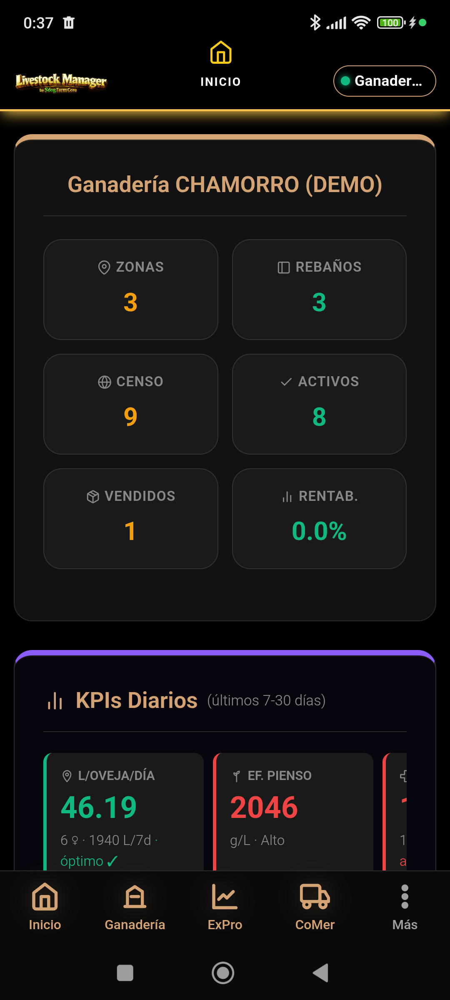

Interfaz principal de inicio de Livestock Manager v4.8.7.
Bienvenido a la Versión 4.8.0
Livestock Manager Premium ha evolucionado para ofrecer una experiencia más fluida, rápida y profesional. Esta versión introduce una navegación simplificada basada en Hubs Operativos y un diseño en Modo Oscuro optimizado para el campo.
Todos tus datos se guardan de forma segura en tu dispositivo. Recuerda realizar copias de seguridad periódicas desde el menú de Ajustes.
Inicio
1. Dashboard: Visión 360°
Al abrir la aplicación, accedes a la pestaña Inicio . Es tu centro de control principal.
Resumen de Censo : Visualiza rápidamente el total de animales activos, vendidos y la rentabilidad estimada.KPIs Diarios : Indicadores en tiempo real sobre producción láctea, ganancia de peso y eficiencia.Alertas Inteligentes : El sistema te avisa de periodos de supresión activos, tareas pendientes y vencimientos legales.Censo
2. Hub Ganadería: Gestión del Censo
Pulsa el icono Ganadería en la barra inferior para gestionar la base de tu explotación.
Acceso Modular : Botones directos para gestionar Animales , Rebaños y Zonas .Selector de Modo : Cambia entre Cárnico, Lácteo o Híbrido para filtrar la información que ves.Vista de Rebaños : Listado de tus lotes con su ubicación actual y número de cabezas.Identificación
3. Ficha Animal y Alta (Wizard)
Accede al listado desde Ganadería → Animales . El alta de animales ahora es un proceso guiado.
Listado Inteligente : Busca por crotal, raza o rebaño. Los colores indican el estado del animal.Nuevo Animal (Wizard) : Pulsa Nuevo para abrir la ficha a pantalla completa.Herramientas Superiores : Usa el botón SCAN para leer crotales con la cámara o NFC para tags compatibles.Validación REGA : El sistema valida el formato ES+12 dígitos en tiempo real (dorado si es correcto, rojo si falla).Operativa
4. Hub ExPro: Operativa Diaria
La consola ExPro es donde registras la actividad diaria. Se adapta a tu modo de trabajo.
Acciones de Registro : Botones directos para Registrar Peso (kg), Ordeño (L) o Tratamientos sanitarios.Líderes GMD : Visualiza los animales con mayor ganancia de peso diaria.Control de Silos : Monitoriza el nivel de tus silos de pienso y registra cargas de alimento.Gestión de Gastos : Registra facturas de alimentación, energía o fitosanitarios al momento.Ventas
5. Comercialización y Ventas
Para vender, ve a Más → Comercialización o pulsa el enlace directo desde ExPro.
Pestañas Especializadas : Gestiona tus ventas de carne y entregas de leche por separado.KPIs Financieros : Ingresos totales, rendimiento de canal y MOFA lácteo en la cabecera.Wizards de Venta : Procesos guiados que generan automáticamente el Albarán PDF y el documento DIMOE .Configuración
7. Configuración y Seguridad
Accede desde Más → Ajustes para configurar tu explotación.
Datos de Finca : Mantén al día tu código REGA, ADSG y datos fiscales.Backup : Exporta tu copia de seguridad regularmente. La app te permite compartirla por email o guardarla en la nube.Ejemplos Prácticos
Consulta nuestras guías detalladas por tipo de explotación:
© 2026 Livestock Manager Premium · v4.8.7